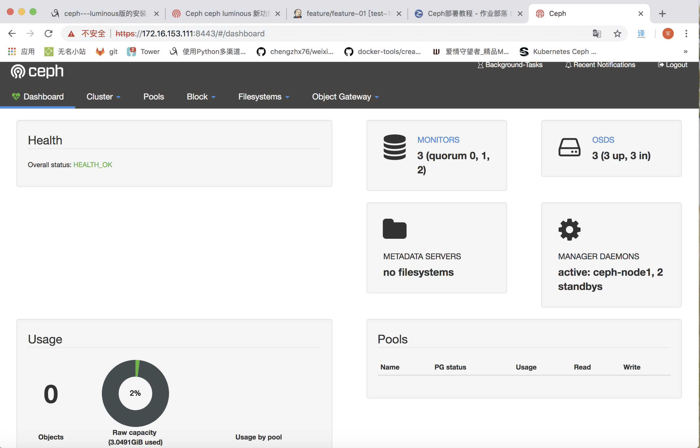

|
|

醉翁亭
穷则独善其身，达则兼济天下
centos7 升级内核3.10到4.19
|
|
Kubernetes 动态使用 cephfs
CephFS支持ReadWriteOnce、ReadOnlyMany和ReadWriteMany，可以允许多POD同时读写，适用于数据共享场景；Ceph RBD 只支持ReadWriteOnce和ReadOnlyMany，允许多POD同时读，适用于状态应用资源隔离场景。
|
|
>
https://www.jianshu.com/p/750a8fde377b?tdsourcetag=s_pctim_aiomsg
Kubernetes PV & PVC 方式使用 CephFS
Kubernetes PV & PVC 方式使用 CephFS
Cephfs 存储集群只支持创建一个 cephfs，现在我们要做的是做两个容器，挂载同一个/mnt/cephfs 挂载点，对里面的文件进行读写。
给服务器打标签，以便pod落到不同的服务器上
|
|
创建secret
|
|
|
|
创建PV
|
|
|
|
创建PVC
|
|
|
|
在这里设置访问模式 accessModes:ReadWriteMany 多读多写。
POD1使用上面创建的PVC
|
|
POD2使用上面创建的PVC
|
|
查看pod启动情况
|
|
在192-168-111-71上看一下
|
|
在192-168-111-74上看一下
|
|
各自执行进行容器
|
|
|
|
ceph使用过程问题集锦
FAQ
1. 执行步骤：ceph-deploy new node 机器：centos 7.5 ceph Luminous版本 源：阿里云
|
|
2. 执行步骤 ：ceph-deploy disk zap node12:sdb
|
|
3.执行：ceph-deploy disk list node12
|
|
4.执行：[root@node12 my-cluster]# ceph-deploy disk zap node12 /dev/sdb
|
|
问题：[ceph_deploy][ERROR ] NeedDiskError: Must supply disk/path argument: node12:sdb
解决：在ceph luminous中创建bluestore的过程为指定data，block-db，block-wal
例如执行ceph-deploy osd create node1 –data /dev/sde –block-db /dev/sdf1 –block-wal /dev/sdf2
省略db 与wal的说明，只指定data则为ceph-deploy osd create node1 –data /dev/sdb则创建于同一个盘123 ### 6执行 ：ceph -s
问题： health: HEALTH_WARN
no active mgr
解决：Ceph Manager Daemon，简称ceph-mgr。 该组件的主要作用是分担和扩展monitor的部分功能，减轻monitor的负担，让更好地管理ceph存储系统ceph
ceph在 luminous中新加入了mgr功能模块，手动安装mgr即可
ceph-deploy mgr create node01 node02 node0312345 ### 7.问题:HEALTH_WARN application not enabled on 1 pool(s)
ceph health
HEALTH_WARN application not enabled on 1 pool(s)
解决:
ceph health detail
HEALTH_WARN application not enabled on 1 pool(s)
POOL_APP_NOT_ENABLED application not enabled on 1 pool(s)
application not enabled on pool ‘kube’
use ‘ceph osd pool application enable
ceph osd pool application enable kube rbd
enabled application ‘rbd’ on pool ‘kube’
ceph health
HEALTH_OK12### 8.问题:clock skew detected on mon.ceph02, mon.ceph03
ceph -s
cluster:
id: e781a2e4-097d-4867-858d-bdbd3a264435
health: HEALTH_WARN
clock skew detected on mon.ceph02, mon.ceph03
解决:
####确认NTP服务是否正常工作
systemctl status ntpd
####修改ceph配置中的时间偏差阈值
vim /etc/ceph/ceph.conf
###在global字段下添加:
mon clock drift allowed = 2
mon clock drift warn backoff = 30
####向需要同步的mon节点推送配置文件
cd /etc/ceph/
ceph-deploy –overwrite-conf config push ceph{01..03}
####重启mon服务并验证
systemctl restart ceph-mon.target
ceph -s
cluster:
id: e781a2e4-097d-4867-858d-bdbd3a264435
health: HEALTH_OK12### 9.问题: rbd: map failed: (6) No such device or address
rbd map abc/zhijian –id admin
rbd: sysfs write failed
RBD image feature set mismatch. Try disabling features unsupported by the kernel with “rbd feature disable”.
In some cases useful info is found in syslog - try “dmesg | tail”.
rbd: map failed: (6) No such device or address
解决:
由于kernel不支持块设备镜像的一些特性，所以映射失败
rbd feature disable abc/zhijian exclusive-lock, object-map, fast-diff, deep-flatten
rbd info abc/zhijian
rbd image ‘zhijian’:
size 1024 MB in 256 objects
order 22 (4096 kB objects)
block_name_prefix: rbd_data.1011074b0dc51
format: 2
features: layering
flags:
create_timestamp: Sun May 6 13:35:21 2018
rbd map abc/zhijian –id admin
/dev/rbd012### 10.问题: followed by --yes-i-really-really-mean-it.
ceph osd pool delete cephfs_data
Error EPERM: WARNING: this will PERMANENTLY DESTROY all data stored in pool cephfs_data. If you are ABSOLUTELY CERTAIN that is what you want, pass the pool name twice, followed by –yes-i-really-really-mean-it.
ceph osd pool delete cephfs_data cephfs_data –yes-i-really-really-mean-it
Error EPERM: pool deletion is disabled; you must first set the mon_allow_pool_delete config option to true before you can destroy a pool
解决:
tail -n 2 /etc/ceph/ceph.conf
[mon]
mon allow pool delete = true
向需要同步的mon节点推送配置文件:
cd /etc/ceph/
ceph-deploy –overwrite-conf config push ceph{01..03}
重启mon服务并验证:
systemctl restart ceph-mon.target
ceph osd pool delete cephfs_data cephfs_data –yes-i-really-really-mean-it
pool ‘cephfs_data’ removed
|
|
ceph osd pool rm cephfs_data cephfs_data –yes-i-really-really-mean-it
Error EBUSY: pool ‘cephfs_data’ is in use by CephFS
解决:
ceph fs ls
name: cephfs, metadata pool: cephfs_metadata, data pools: [cephfs_data ]
ceph fs rm cephfs –yes-i-really-mean-it
Error EINVAL: all MDS daemons must be inactive before removing filesystem
systemctl stop ceph-mds.target
ceph fs rm cephfs
Error EPERM: this is a DESTRUCTIVE operation and will make data in your filesystem permanently inaccessible. Add –yes-i-really-mean-it if you are sure you wish to continue.
ceph fs rm cephfs –yes-i-really-mean-it
ceph fs ls
No filesystems enabled12### 12.问题:使用静态PV创建pod，pod一直处于ContainerCreating状态:
kubectl get pod ceph-pod1
NAME READY STATUS RESTARTS AGE
ceph-pod1 0/1 ContainerCreating 0 10s
……
kubectl describe pod ceph-pod1
Warning FailedMount 41s (x8 over 1m) kubelet, node01 MountVolume.WaitForAttach failed for volume “ceph-pv” : fail to check rbd image status with: (executable file not found in $PATH), rbd output: ()
Warning FailedMount 0s kubelet, node01 Unable to mount volumes for pod “ceph-pod1_default(14e3a07d-93a8-11e8-95f6-000c29b1ec26)”: timeout expired waiting for volumes to attach or mount for pod “default”/“ceph-pod1”. list of unmounted volumes=[ceph-vol1]. list of unattached volumes=[ceph-vol1 default-token-v9flt]
解决:node节点安装最新版的ceph-common解决该问题，ceph集群使用的是最新的mimic版本，而base源的版本太陈旧，故出现该问题123### 13.问题:创建动态PV，PVC一直处于pending状态:
kubectl get pvc -n ceph
NAME STATUS VOLUME CAPACITY ACCESS MODES STORAGECLASS AGE
ceph-pvc Pending ceph-rbd 2m
kubectl describe pvc -n ceph
……
Warning ProvisioningFailed 27s persistentvolume-controller Failed to provision volume with StorageClass “ceph-rbd”: failed to create rbd image: exit status 1, command output: 2018-07-31 11:10:33.395991 7faa3558b7c0 -1 did not load config file, using default settings.
rbd: extraneous parameter –image-feature
解决:
persistentvolume-controller 服务运行在master节点，受kube-controller-manager 控制，故master节点也需要安装ceph-common包123### 14. 在ceph中用过的磁盘再用，可能需要下面的操作
Not sure what version of ceph you are running, if you run mimic, you may try below:
1). make sure you have file existed: /var/lib/ceph/bootstrap-osd/ceph.keyring
2). make sure you have dir existed: /var/lib/ceph/osd
3). run command below:
$ sudo ceph-volume lvm zap /dev/sdb –destroy
$ sudo /usr/bin/ceph-authtool –gen-print-key
$ sudo /usr/sbin/ceph-volume –cluster ceph lvm create –bluestore –data /dev/sdb
Let me know if your issue get fixed or not !
Ben123### 15.问题 还是用过的磁盘再用时
[root@ceph-node1 ceph]# ceph-volume lvm zap /dev/vdb
shell-init: error retrieving current directory: getcwd: cannot access parent directories: No such file or directory
shell-init: error retrieving current directory: getcwd: cannot access parent directories: No such file or directory
shell-init: error retrieving current directory: getcwd: cannot access parent directories: No such file or directory
Running command: /usr/sbin/cryptsetup status /dev/mapper/
stdout: /dev/mapper/ is inactive.
–> Zapping: /dev/vdb
Running command: /usr/sbin/wipefs –all /dev/vdb
stderr: wipefs: error: /dev/vdb: probing initialization failed: Device or resource busy
–> RuntimeError: command returned non-zero exit status: 1
[root@ceph-node1 ceph]# wipefs -af /dev/vdb
/dev/vdb: 8 bytes were erased at offset 0x00000200 (gpt): 45 46 49 20 50 41 52 54
/dev/vdb: 8 bytes were erased at offset 0xc7ffffe00 (gpt): 45 46 49 20 50 41 52 54
/dev/vdb: 2 bytes were erased at offset 0x000001fe (PMBR): 55 aa
/dev/vdb: calling ioclt to re-read partition table: Success
答案
[root@ceph-node3 ceph]# fdisk -l
Disk /dev/vda: 42.9 GB, 42949672960 bytes, 83886080 sectors
Units = sectors of 1 * 512 = 512 bytes
Sector size (logical/physical): 512 bytes / 512 bytes
I/O size (minimum/optimal): 512 bytes / 512 bytes
Disk label type: dos
Disk identifier: 0x000d4e27
Device Boot Start End Blocks Id System
/dev/vda1 * 2048 83886046 41941999+ 83 Linux
WARNING: fdisk GPT support is currently new, and therefore in an experimental phase. Use at your own discretion.
Disk /dev/vdb: 53.7 GB, 53687091200 bytes, 104857600 sectors
Units = sectors of 1 * 512 = 512 bytes
Sector size (logical/physical): 512 bytes / 512 bytes
I/O size (minimum/optimal): 512 bytes / 512 bytes
Disk label type: gpt
Start End Size Type Name
Disk /dev/mapper/ceph–33b632a7–fba6–4aa0–82f2–d6c54b0112c7-osd–block–997b07ac–253f–4dd8–8d7d–3a816d0f4b69: 53.7 GB, 53682896896 bytes, 104849408 sectors
Units = sectors of 1 * 512 = 512 bytes
Sector size (logical/physical): 512 bytes / 512 bytes
I/O size (minimum/optimal): 512 bytes / 512 bytes
[root@ceph-node3 ceph]# dmsetup remove ceph–33b632a7–fba6–4aa0–82f2–d6c54b0112c7-osd–block–997b07ac–253f–4dd8–8d7d–3a816d0f4b69
[root@ceph-node3 ceph]# fdisk -l
Disk /dev/vda: 42.9 GB, 42949672960 bytes, 83886080 sectors
Units = sectors of 1 * 512 = 512 bytes
Sector size (logical/physical): 512 bytes / 512 bytes
I/O size (minimum/optimal): 512 bytes / 512 bytes
Disk label type: dos
Disk identifier: 0x000d4e27
Device Boot Start End Blocks Id System
/dev/vda1 * 2048 83886046 41941999+ 83 Linux
WARNING: fdisk GPT support is currently new, and therefore in an experimental phase. Use at your own discretion.
Disk /dev/vdb: 53.7 GB, 53687091200 bytes, 104857600 sectors
Units = sectors of 1 * 512 = 512 bytes
Sector size (logical/physical): 512 bytes / 512 bytes
I/O size (minimum/optimal): 512 bytes / 512 bytes
Disk label type: gpt
Start End Size Type Name
|
|
[root@ceph-node1 ceph]# ceph osd lspools
shell-init: error retrieving current directory: getcwd: cannot access parent directories: No such file or directory
shell-init: error retrieving current directory: getcwd: cannot access parent directories: No such file or directory
1 mytest
2 data
[root@ceph-node1 ceph]# ceph osd pool delete mytest
shell-init: error retrieving current directory: getcwd: cannot access parent directories: No such file or directory
shell-init: error retrieving current directory: getcwd: cannot access parent directories: No such file or directory
Error EPERM: WARNING: this will PERMANENTLY DESTROY all data stored in pool mytest. If you are ABSOLUTELY CERTAIN that is what you want, pass the pool name twice, followed by –yes-i-really-really-mean-it.
[root@ceph-node1 ceph]# ceph osd pool delete mytest mytest –yes-i-really-really-mean-it
shell-init: error retrieving current directory: getcwd: cannot access parent directories: No such file or directory
shell-init: error retrieving current directory: getcwd: cannot access parent directories: No such file or directory
Error EPERM: pool deletion is disabled; you must first set the mon_allow_pool_delete config option to true before you can destroy a pool
[root@ceph-node1 ceph]# ceph osd lspools
shell-init: error retrieving current directory: getcwd: cannot access parent directories: No such file or directory
shell-init: error retrieving current directory: getcwd: cannot access parent directories: No such file or directory
1 mytest
2 data
答案
[root@ceph-node1 ceph]# cd /etc/ceph
[root@ceph-node1 ceph]# ll
total 12
-rw——- 1 root root 151 Oct 24 17:11 ceph.client.admin.keyring
-rw-r–r– 1 root root 513 Oct 24 17:11 ceph.conf
-rw-r–r– 1 root root 92 Sep 25 02:15 rbdmap
-rw——- 1 root root 0 Oct 24 16:02 tmpvz7HlY
[root@ceph-node1 ceph]# vim ceph.conf
[root@ceph-node1 ceph]# cat /etc/ceph/ceph.conf
[global]
fsid = 2dac8fcc-6523-4db2-8ed4-346bfda1237a
public_network = 192.168.111.0/24
mon_initial_members = ceph-node1, ceph-node2, ceph-node3
mon_host = 192.168.111.124,192.168.111.125,192.168.111.126
auth_cluster_required = cephx
auth_service_required = cephx
auth_client_required = cephx
mon_clock_drift_allowed = 2
osd_journal_size = 4086
osd_pool_default_pg_num = 128
osd_pool_default_pgp_num = 128
osd pool default size = 2
osd pool default min size = 1
rbd_default_features = 1
client_quota = true
[mon]
mon_allow_pool_delete = true
[root@ceph-node1 ceph]# systemctl restart ceph-mon@ceph-node1
[root@ceph-node1 ceph]# ceph osd pool delete mytest mytest –yes-i-really-really-mean-it
pool ‘mytest’ removed
[root@ceph-node1 ceph]# ceph osd pool delete data data –yes-i-really-really-mean-it
pool ‘data’ removed
问题描述：
删除pool的时候提示下面的错误：
[root@node3 ~]# ceph osd pool delete ecpool ecpool –yes-i-really-really-mean-it
Error EPERM: pool deletion is disabled; you must first set the mon_allow_pool_delete config option to true before you can destroy a pool
这是由于没有配置mon节点的 mon_allow_pool_delete 字段所致，解决办法就是到mon节点进行相应的设置
解决方法：
注：1-3步的操作必须在mon节点上执行
- 打开mon节点的配置文件：
[root@node1 ceph]# vi /etc/ceph/ceph.conf - 在配置文件中添加如下内容：
[mon]
mon allow pool delete = true - 重启ceph-mon服务：
[root@node1 ceph]# systemctl restart ceph-mon.target - 执行删除pool命令：
[root@node3 ~]# ceph osd pool delete ecpool ecpool –yes-i-really-really-mean-it
pool ‘ecpool’ removed12345#简单ceph性能测试
rbd feature disable exclusive-lock, object-map, fast-diff, deep-flatten1#创建测试池mytest
ceph osd pool create mytest 128
rados lspools
ceph osd pool set mytest size 2 #副本为2
ceph osd pool delete mytest #删除12#Rados性能测试(关注 bandwidth带宽,latency延迟)
rados bench -p mytest 10 write –no-cleanup #写测试10秒
rados bench -p mytest 10 seq #顺序读
rados bench -p mytest 10 rand #随机读
rados -p mytest cleanup #清理测试数据12#rbd块设备测试
rbd create –size 2G mytest/test1 #创建块设备映像test1
rbd ls mytest
rbd info mytest/test1
rbd map mytest/test1 #映射块设备
#/dev/rbd0
#rbd showmapped #查看已映射块设备
#挂载
mkfs.xfs /dev/rbd0
mkdir -p /mnt/ceph
mount /dev/rbd0 /mnt/ceph/
df -h /mnt/ceph1#测试
rbd bench-write mytest/test1
#默认参数io 4k,线程数16,总写入1024M, seq顺序写
```
CEPH(mimic版本)安装文档
#基础配置
修改主机名hostname
|
|
追加hosts
|
|
校对系统时钟
|
|
yum 安装 openssh
|
|
关闭防火墙
|
|
使用阿里源
|
|
指定安装版本的源
|
|
重装清除配置
|
|
#ceph安装配置
全部在ceph-admin操作
|
|
下载shell ssh免密验证
|
|
认证用户及密码
|
|
安装ceph-deploy配置工具
|
|
创建配置目录
|
|
初始化Mon配置
|
|
配置网络,单网卡忽略 修改冗余份数为2，日志大小2G
|
|
安装Ceph
|
|
初始化monitor和key
|
|
分发拷贝配置及密钥
|
|
创建存储节点(使用vdb磁盘)
|
|
清空磁盘
|
|
查看可用磁盘
|
|
创建osd
|
|
创建 ceph mgr 管理进程服务 自12版本启用
|
|
创建mon.
|
|
#启用dashboard (在mon节点)12345678910111213141516171819202122232425262728查看是否开启dashboard# ceph mgr services{ "dashboard": "https://ceph-node1:8443/",}#生成并安装自签名证书:# ceph dashboard create-self-signed-certSelf-signed certificate created创建具有管理员角色的用户:# ceph dashboard set-login-credentials admin adminUsername and password updated或者直接下面这样的操作ceph mgr module enable dashboard# 设置dashboard的ip和端口ceph config-key put mgr/dashboard/server_addr ceph-node1ceph config-key put mgr/dashboard/server_port 8443systemctl restart ceph-mgr@ceph-node1#生成并安装自签名证书:# ceph dashboard create-self-signed-certSelf-signed certificate created创建具有管理员角色的用户:# ceph dashboard set-login-credentials admin adminUsername and password updated

#参考
>
http://docs.ceph.org.cn/man/8/ceph-deploy/
http://www.jianshu.com/p/25163032f57f
https://www.cnblogs.com/sammyliu/p/5557666.html
https://blog.csdn.net/younger_china/article/details/51823571
https://www.cnblogs.com/elvi/p/7897178.html
https://blog.csdn.net/kozazyh/article/details/79519439
https://blog.csdn.net/wylfengyujiancheng/article/details/78461801
https://www.cnblogs.com/kevingrace/p/9141432.html
客户端挂载 ceph 文件系统
在ceph-admin上执行
.部署MDS(元数据服务器)
|
|
创建pool
|
|
|
|
.创建文件系统
|
|
.查看创建好的Ceph FS
|
|
.查看 mds 状态
|
|
.查看并加载内核模块（在cpph-node{1,2,3}上查看）
|
|
##第一种方式
.安装mount.ceph
# yum install -y ceph ceph-common
# ls /usr/sbin/mount.ceph
/usr/sbin/mount.ceph
.创建挂载点
|
|
.在ceph集群下查看key
|
|
.挂载启用cephx认证的 Ceph 文件系统
# mount -t ceph 192.168.111.124:6789:/ /mnt/mycephfs -o name=admin,secret=AQAx985bVpRpBBAAeICQpLDodvLbCpvvy7pX5A==
# df -h|grep ceph
192.168.111.124:6789:/ 150G 3.1G 147G 3% /mnt/mycephfs
###.卸载 ceph 文件系统
# umount /mnt/mycephfs
.安全起见，将key复制至挂载点下再进行挂载
# ceph auth get-key client.admin > /etc/ceph/admin.secret
.将多个节点一起挂载，保证高可用
# mount -t ceph 192.168.111.124:6789,192.168.111.125:6789,192.168.111.126:6789:/ /mnt/mycephfs -o name=admin,secretfile=/etc/ceph/admin.secret
###.卸载 ceph 文件系统
# umount /mnt/mycephfs
k8s环境中使用cephfs
在k8s的每个节点准备secret
在ceph集群中的node中执行
ceph auth get-key client.admin
会显示 AQAx985bVpRpBBAAeICQpLDodvLbCpvvy7pX5A==
将内容写到k8s的node节点中
echo "AQAx985bVpRpBBAAeICQpLDodvLbCpvvy7pX5A==" > /etc/ceph/admin.secret
在k8s的每个节点安装ceph-common
|
|
yum install ceph-common
使用cephfs
|
|
|
|
|
|
在192.168.111.71机器上看一下，果然挂上了123456789101112131415161718[root@host-192-168-111-71 ~]# df -hFilesystem Size Used Avail Use% Mounted on/dev/vda1 30G 3.9G 25G 14% /devtmpfs 3.9G 0 3.9G 0% /devtmpfs 3.9G 0 3.9G 0% /dev/shmtmpfs 3.9G 41M 3.8G 2% /runtmpfs 3.9G 0 3.9G 0% /sys/fs/cgroup/dev/vdb1 40G 5.2G 33G 14% /datatmpfs 783M 0 783M 0% /run/user/0tmpfs 3.9G 12K 3.9G 1% /var/lib/kubelet/pods/0553a7d0-d845-11e8-aebb-fa163ee3fe1b/volumes/kubernetes.io~secret/flannel-token-vppnxoverlay 30G 3.9G 25G 14% /var/lib/docker/overlay2/70aa1558defac152ad57366287f95828a95b510ea9a0cb55ee187ee190907ff2/mergedshm 64M 0 64M 0% /var/lib/docker/containers/c47cee8ebd316e235e4ab9c7c3db7348f035e93563f67fd289b1f5c68cac03a7/mounts/shmoverlay 30G 3.9G 25G 14% /var/lib/docker/overlay2/ca40d1fe3cd61734d53959ab8fc87a3c7fa7b88e18355c78189a3a6e5df51e17/mergedtmpfs 3.9G 12K 3.9G 1% /var/lib/kubelet/pods/b8ee249d-d858-11e8-aebb-fa163ee3fe1b/volumes/kubernetes.io~secret/default-token-x854j192.168.111.124:6789,192.168.111.125:6789,192.168.111.126:6789:/ 70G 0 70G 0% /var/lib/kubelet/pods/b8ee249d-d858-11e8-aebb-fa163ee3fe1b/volumes/kubernetes.io~cephfs/cephfsoverlay 30G 3.9G 25G 14% /var/lib/docker/overlay2/4f3b4e209133d9e476ca942af3a844056a8eec19446c1cfca6972349bd1bbde0/mergedshm 64M 0 64M 0% /var/lib/docker/containers/730c7e0402e5823c893cf9b3b75b2b9e3b73aac4561fcbbbad1521e8169f781f/mounts/shmoverlay 30G 3.9G 25G 14% /var/lib/docker/overlay2/542f699e1270af28b15aa9e7c42cff0039c0e14f7663c81054468a8dfe81bda9/merged
使用 cephfs-with-secret & ceph-secret
|
|
|
|
|
|
|
|
参考：
>
http://docs.ceph.org.cn/rados/deployment/ceph-deploy-new/
http://docs.ceph.org.cn/man/8/mount.ceph/
http://www.zphj1987.com/archives/
http://docs.ceph.com/docs/master/cephfs
ceph日常使用文档
#整体查看命令
[root@ceph-node1 ceph]# ceph -s
|
|
● ceph-node1
│ └─97168 grep –color=auto ceph
├─system-ceph\x2dmgr.slice
│ └─ceph-mgr@ceph-node1.service
│ └─93452 /usr/bin/ceph-mgr -f –cluster ceph –id ceph-node1 –setuser ceph –setgroup ceph
├─system-ceph\x2dosd.slice
│ └─ceph-osd@0.service
│ └─93223 /usr/bin/ceph-osd -f –cluster ceph –id 0 –setuser ceph –setgroup ceph
├─system-ceph\x2dmon.slice
│ └─ceph-mon@ceph-node1.service
│ └─94898 /usr/bin/ceph-mon -f –cluster ceph –id ceph-node1 –setuser ceph –setgroup ceph123 ##### [root@ceph-node1 ceph]# ceph df
GLOBAL:
SIZE AVAIL RAW USED %RAW USED
150 GiB 147 GiB 3.0 GiB 2.03
POOLS:
NAME ID USED %USED MAX AVAIL OBJECTS123456 #MON查看命令### 查看 mon 状态信息### [root@ceph-node1 ceph]# ceph mon stat
e1: 3 mons at {ceph-node1=192.168.111.124:6789/0,ceph-node2=192.168.111.125:6789/0,ceph-node3=192.168.111.126:6789/0}, election epoch 26, leader 0 ceph-node1, quorum 0,1,2 ceph-node1,ceph-node2,ceph-node3123### 查看 mon 映射信息 ### [root@ceph-node1 ceph]# ceph mon dump
dumped monmap epoch 1
epoch 1
fsid 2dac8fcc-6523-4db2-8ed4-346bfda1237a
last_changed 2018-10-23 18:25:36.452376
created 2018-10-23 18:25:36.452376
0: 192.168.111.124:6789/0 mon.ceph-node1
1: 192.168.111.125:6789/0 mon.ceph-node2
2: 192.168.111.126:6789/0 mon.ceph-node3123### 查看 mon 的选举状态### [root@ceph-node1 ceph]# ceph quorum_status
{“election_epoch”:26,”quorum”:[0,1,2],”quorum_names”:[“ceph-node1”,”ceph-node2”,”ceph-node3”],”quorum_leader_name”:”ceph-node1”,”monmap”:{“epoch”:1,”fsid”:”2dac8fcc-6523-4db2-8ed4-346bfda1237a”,”modified”:”2018-10-23 18:25:36.452376”,”created”:”2018-10-23 18:25:36.452376”,”features”:{“persistent”:[“kraken”,”luminous”,”mimic”,”osdmap-prune”],”optional”:[]},”mons”:[{“rank”:0,”name”:”ceph-node1”,”addr”:”192.168.111.124:6789/0”,”public_addr”:”192.168.111.124:6789/0”},{“rank”:1,”name”:”ceph-node2”,”addr”:”192.168.111.125:6789/0”,”public_addr”:”192.168.111.125:6789/0”},{“rank”:2,”name”:”ceph-node3”,”addr”:”192.168.111.126:6789/0”,”public_addr”:”192.168.111.126:6789/0”}]}}12345678910111213141516171819202122232425262728293031323334353637383940414243444546474849505152535455565758596061626364656667686970717273747576777879### 查看 mon 详细状态### [root@ceph-node1 ceph]# ceph daemon mon.ceph-node1 mon_status ``` { "name": "ceph-node1", "rank": 0, "state": "leader", "election_epoch": 26, "quorum": [ 0, 1, 2 ], "features": { "required_con": "144115738102218752", "required_mon": [ "kraken", "luminous", "mimic", "osdmap-prune" ], "quorum_con": "4611087854031142907", "quorum_mon": [ "kraken", "luminous", "mimic", "osdmap-prune" ] }, "outside_quorum": [], "extra_probe_peers": [], "sync_provider": [], "monmap": { "epoch": 1, "fsid": "2dac8fcc-6523-4db2-8ed4-346bfda1237a", "modified": "2018-10-23 18:25:36.452376", "created": "2018-10-23 18:25:36.452376", "features": { "persistent": [ "kraken", "luminous", "mimic", "osdmap-prune" ], "optional": [] }, "mons": [ { "rank": 0, "name": "ceph-node1", "addr": "192.168.111.124:6789/0", "public_addr": "192.168.111.124:6789/0" }, { "rank": 1, "name": "ceph-node2", "addr": "192.168.111.125:6789/0", "public_addr": "192.168.111.125:6789/0" }, { "rank": 2, "name": "ceph-node3", "addr": "192.168.111.126:6789/0", "public_addr": "192.168.111.126:6789/0" } ] }, "feature_map": { "mon": [ { "features": "0x3ffddff8ffa4fffb", "release": "luminous", "num": 1 } ] }}
#OSD查看命令
查看 osd 运行状态
[root@ceph-node1 ceph]# ceph osd stat
``
3 osds: 3 up, 3 in; epoch: e132123456789101112131415161718192021### 查看 osd 映射信息### [root@ceph-node1 ceph]# ceph osd dump ``` epoch 132fsid 2dac8fcc-6523-4db2-8ed4-346bfda1237acreated 2018-10-23 18:25:53.073779modified 2018-10-24 17:23:56.038192flags sortbitwise,recovery_deletes,purged_snapdirscrush_version 42full_ratio 0.95backfillfull_ratio 0.9nearfull_ratio 0.85require_min_compat_client jewelmin_compat_client jewelrequire_osd_release mimicmax_osd 11osd.0 up in weight 1 up_from 119 up_thru 0 down_at 0 last_clean_interval [0,0) 192.168.111.124:6800/93223 192.168.111.124:6801/93223 192.168.111.124:6802/93223 192.168.111.124:6803/93223 exists,up b3ab969e-e304-4214-8dee-e8e0b6c2c251osd.1 up in weight 1 up_from 121 up_thru 0 down_at 0 last_clean_interval [0,0) 192.168.111.125:6800/87421 192.168.111.125:6801/87421 192.168.111.125:6802/87421 192.168.111.125:6803/87421 exists,up 5ead017b-c369-4e05-8880-a90598e248d6osd.2 up in weight 1 up_from 123 up_thru 0 down_at 0 last_clean_interval [0,0) 192.168.111.126:6800/87298 192.168.111.126:6801/87298 192.168.111.126:6802/87298 192.168.111.126:6803/87298 exists,up ad316e76-303d-498d-8845-c71f5b468c29
查看数据延迟
[root@ceph-node1 ceph]# ceph osd perf
|
|
详细列出集群每块磁盘的使用情况
[root@ceph-node1 ceph]# ceph osd df
|
|
查看 osd 目录树
[root@ceph-node1 ceph]# ceph osd tree
|
|
###查看最大 osd 的个数
[root@ceph-node1 ceph]# ceph osd getmaxosd
|
|
PG查看命令
###查看 PG 组的映射信息
[root@ceph-node1 ceph]# ceph pg dump
|
|
显示集群中的所有的 PG 统计
[root@ceph-node1 ceph]# ceph pg dump –format [plain|json]
|
|
OSD正确的删除过程
|
|
tag:
缺失模块。
1、在博客根目录（注意不是yilia根目录）执行以下命令：
npm i hexo-generator-json-content --save
2、在根目录_config.yml里添加配置：
jsonContent:
meta: false
pages: false
posts:
title: true
date: true
path: true
text: true
raw: false
content: false
slug: false
updated: false
comments: false
link: false
permalink: false
excerpt: false
categories: false
tags: true
我的征途是星辰大海